×
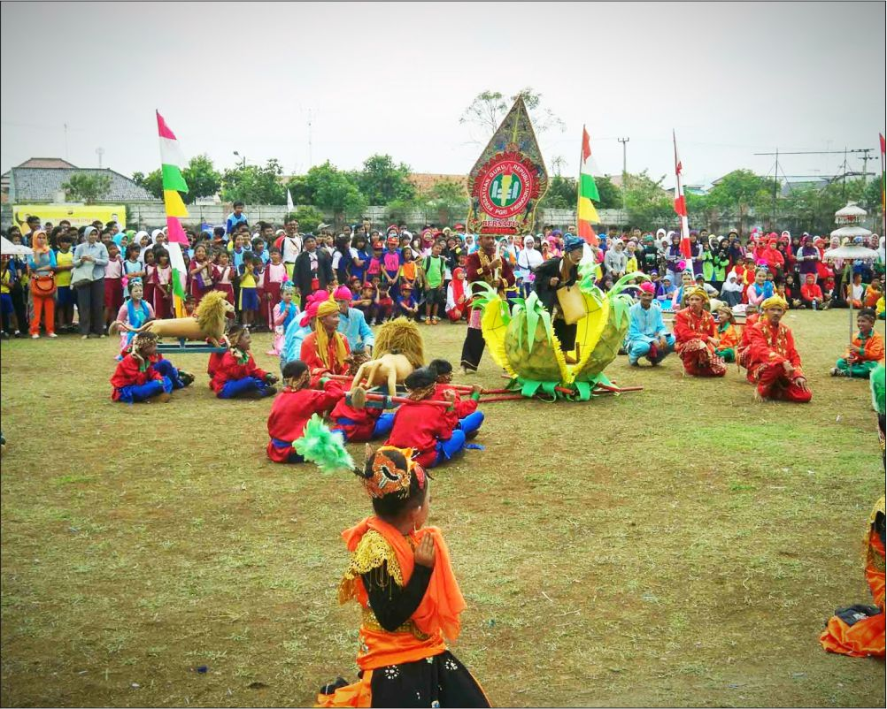
Sisingaan
Kesenian Sisingaan adalah salah satu kesenian khas Subang yang sampai sekarang masih berkembang dengan baik disana. Biasanya kesenian sisingaan ini dimainkan untuk acara acara khusus seperti penerimaan tamu kehormatan, acara khitan anak, dan sebagainya. Dan setiap tanggal 5 April selalu diadakan Festival Sisingaan yang diikuti oleh semua Kecamatan yang ada di Subang untuk memeriahkan acara peringatan hari jadi Kabupaten Subang. Makna dari Sisingaan sendiri yaitu sebagai simbol pelecehan terhadap penjajah, dimana lambang negara itu adalah Singa yang pada waktu itu adalah negara agraris.
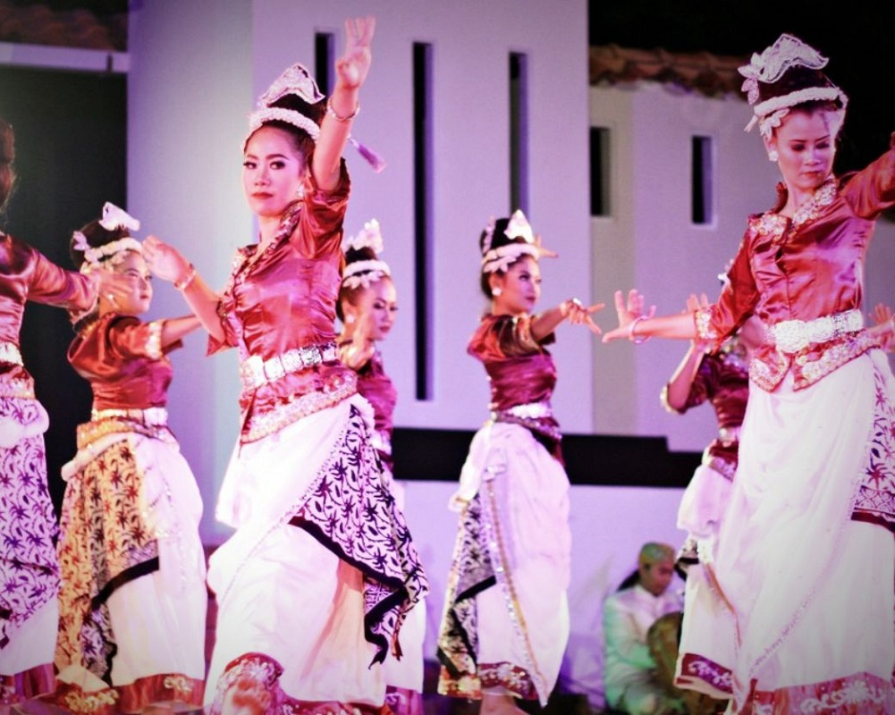
Doger Kontrak
Doger Kontrak, kesenian khas rakyat Subang ini mulai berkembang sebelum kemerdekaan Indonesia (1945). Kesenian ini bermula pada saat perusahaan perkebunan The P&T Lands yang saat itu dikuasai Belanda mengijinkan pertunjukan doger di kontrak-kontrak perkebunan yang ada didaerah Subang sebagai balas budi para buruh dan sebagai hiburan, karena sebelumnya para perkebunan tidak diijinkan berhubungan dengan dunia luar. Doger Kontrak Subang mempunyai perbedaan dengan doger lainnya, yaitu dengan adanya perpaduan antara tradisi Ketuk Tilu dan Tari Keurseus.

Gembyung
Gembyung adalah ensambel musik yang terdiri dari beberapa waditra terbang dengan tarompet yang merupakan jenis kesenian bernafaskan Islam. Meskipun demikian, di lapangan ditemukan beberapa kesenian Gembyung yang tidak menggunakan waditra tarompet. Gembyung merupakan jenis kesenian tradisional khas daerah Subang yang sampai sekarang masih terus dimainkan. Gembyung biasa dimainkan untuk hiburan rakyat seperti pesta khitanan dan perkawinan atau acara hiburan lainnya dan juga digunakan untuk upacara adat seperti halnya Ruwatan bumi, minta hujan, dan mapag dewi sri. Dalam perkembangannya saat ini, gembyung tidak hanya sebagai seni auditif, tapi sudah menjadi seni pertunjukan yang melibatkan unsur seni lain seperti seni tari.
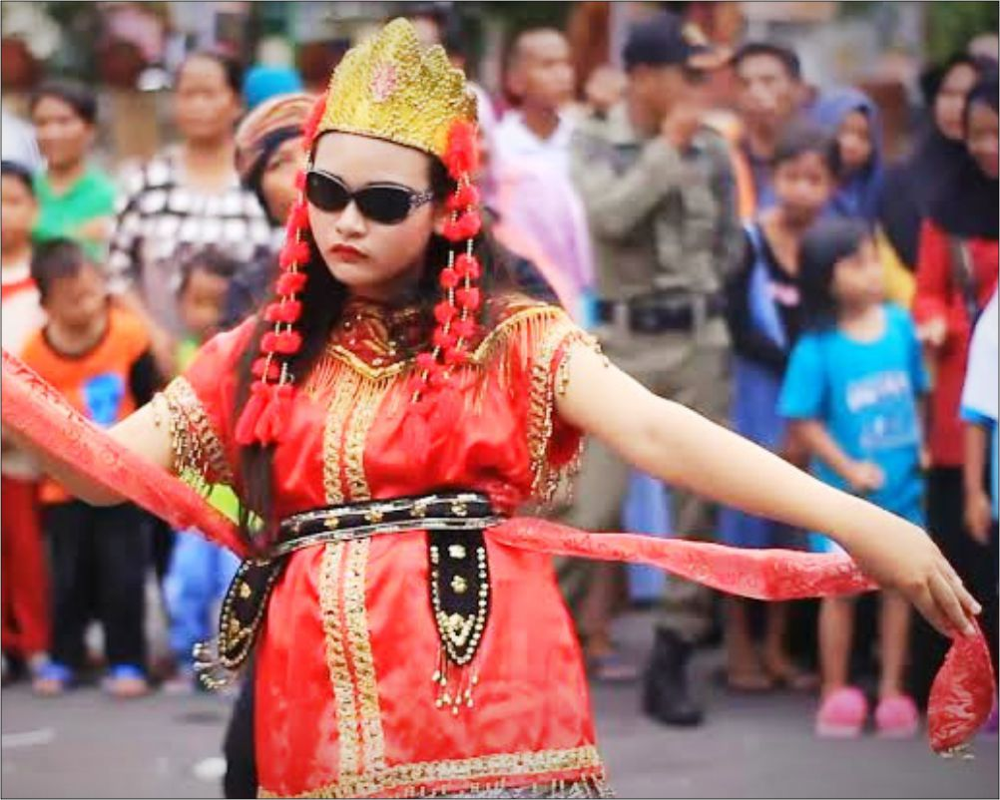
Sintren
Tari sintren adalah salah satu kesenian tradisional orang - orang didaerah Jawa, khususnya di Indramayu. Kesenian sintren identik dengan aroma aroma mistis atau magis yang diambil dari cerita cinta kasih Sulasih dengan Sulandono, Sintren dikenal juga dengan nama Lais. Kesenian sintren banyak dikenal didaerah pesisir utara Jawa Tengah dan Jawa Barat, seperti Brebes, Pemalang, Banyumas, Majalengka, Indramayu, Cirebon, Subang, Pekalongan, dan Kabupaten Kuningan.

Toleat
Toleat merupakan salah satu jenis musik tiup atau aerophone khas daerah Subang. Toleat biasa dimainkan oleh penggembala di daerah pantura sambil menunggu gembalaannya. Awalnya toleat dibuat dari bahan jerami karena perkembangan jaman dan keawetan bahannya maka sekarang toleat dibuat menggunakan bahan bambu tamiyang, toleat mempunyai nada dasar salendro dan mempunyai delapan lubang nada serta mempunyai suara yang unik menyerupai saxophone, bentuknya mirip dengan suling tetapi mempunyai rit yang dibuat dari kayu berenuk. Toleat dapat dipadukan dengan beberapa jenis alat musik lain sehingga dapat menghasilkan jenis musik yang bagus. Biasanya toleat dipadukan dengan kecapi dan kendang, bahkan sekarang ini toleat dikolaburasikan dengan alat musik modern seperti keyboard.
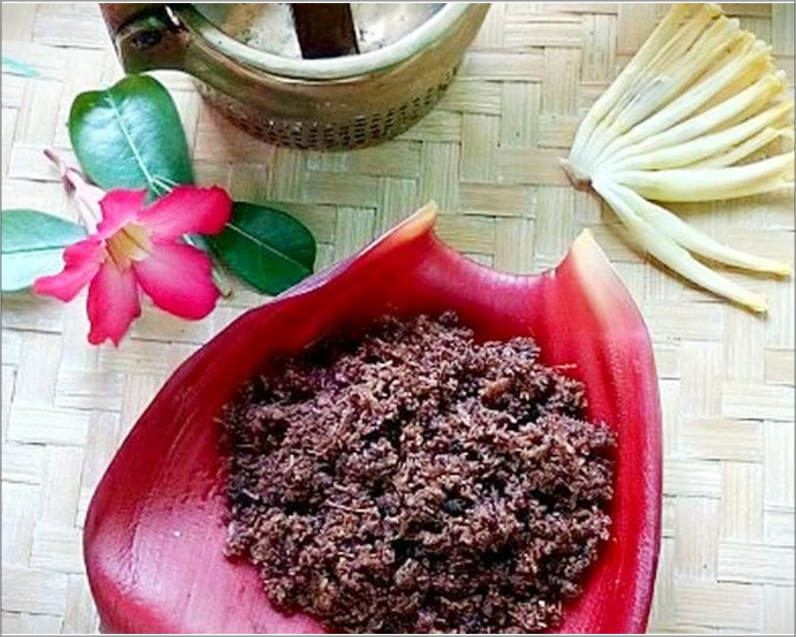
Abon Jantung Pisang
Jika abon biasanya terbuat dari daging sapi atau ayam, Subang memiliki makanan khas berupa abon namun dengan bahan dasar yang tidak biasa. Abon khas Subang dibuat dari olahan jantung pisang. Meski bahannya jantung pisang, rasa dan tekstur abon ini tak beda jauh dari abon sapi pada umumnya. Rasanya lezat dan tentunya cocok untuk orang-orang vegetarian. Inilah mengapa makanan khas Subang ini cukup laris dicari di toko oleh-oleh.

Dodol Nanas
Subang terkenal dengan buah nanasnya karena disana buah ini sangat melimpah ruah, buah nanas yang terkenal di Subang yaitu nanas simadu, nanas simadu sering diolah menjadi makanan yang lezat salah satunya dodol. Dodol nanas memiliki tekstur yang lembut, sedikit kenyal, dan legit. Rasanya pun manis dan sangat cocok dimakan untuk teman minum teh disore hari. Makanan khas Subang ini sangat mudah ditemui diberbagai toko oleh-oleh seputaran Subang.
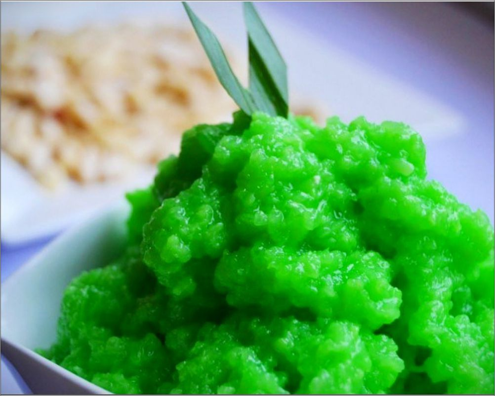
Tape Ketan
Makanan yang satu ini hampir sama dengan peuyem ketan. Namun, tape ketan biasanya dibuat untuk dimakan sebagai campuran es atau sebagai isian kue. Tape ketan khas Subang memiliki rasa yang lebih manis jika dibandingkan dengan tape ketan pada umumnya. Tape ketan mudah ditemui di pasar-pasar tradisional di Subang. Banyak juga yang dijual di toko oleh-oleh. Karena tape ketan biasanya basah dan lembek, makanan ini tidak begitu tahan lama sehingga kurang cocok dijadikan oleh-oleh, terutama bagi yang harus menempuh perjalanan cukup lama.
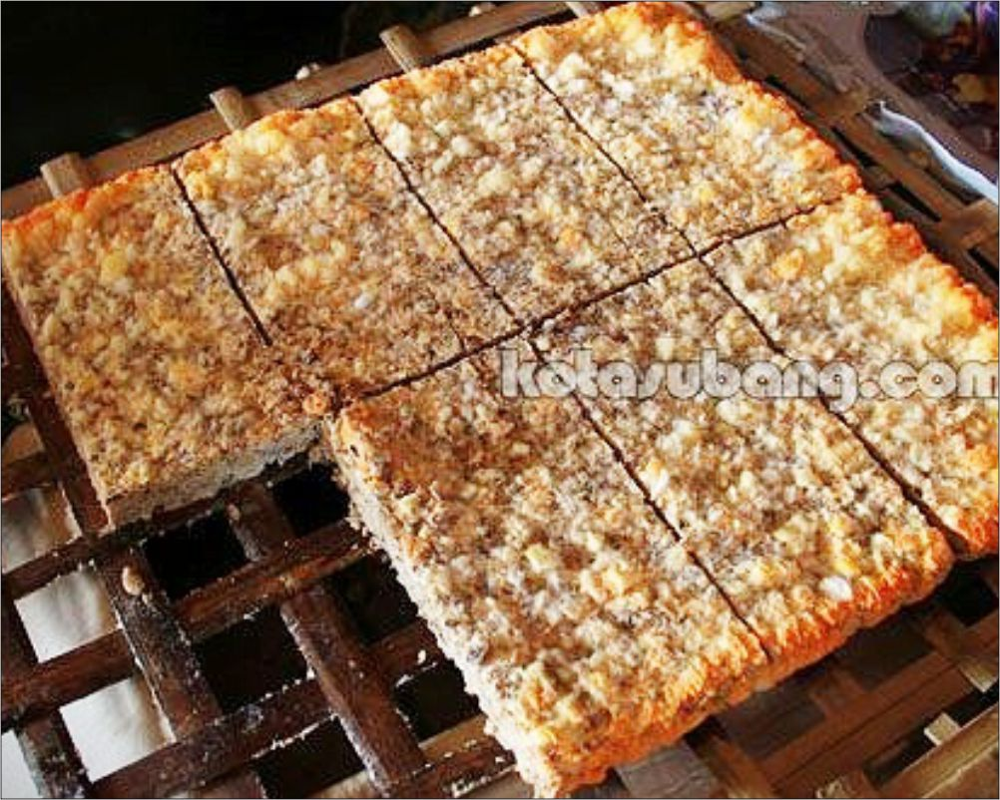
Oncom Dawuan
Siapa yang tidak tau oncom, kuliner khas Jawa Barat ini terbuat dari kacang kedelai yang difermentasi sehingga menjadi sebuah makanan yang lezat. Di Subang, oncom yang paling ternama adalah di daerah Dawuan. Oleh karena itu, makanan ini sering disebut oncom dawuan, proses pembuatan oncom ini terbilang masih tradisional, yaitu dengan menggunakan tungku api dan bahan bakunya pun menggunakan kacang tanah, sehingga rasa yang tercipta menjadi sangat nikmat dan menggoda selera.
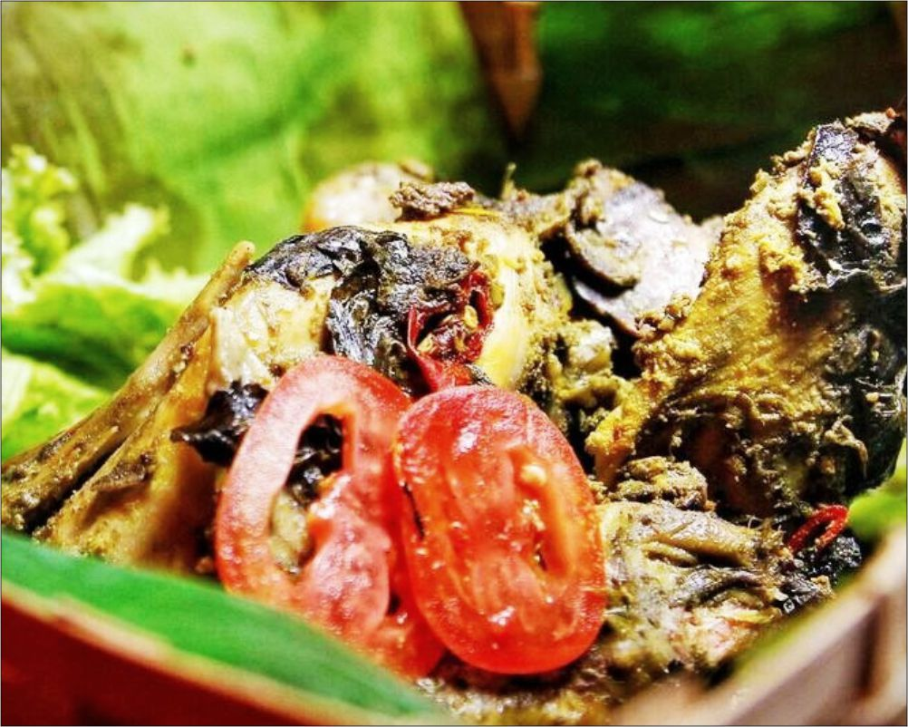
Bubuy Ayam Subang
Bubuy Ayam adalah kuliner khas Subang berupa pepes ayam yang dilumuri dengan bumbu rempah khusus yang dibungkus dengan daun pisang yang amat sangat lezat dan wajib dicoba jika berkunjung ke Subang. Pepes biasanya dibuat dari ikan atau tahu, maka di Subang ayam lah menjadi bahan utama pepes. Makanan ini sangat cocok untuk dibawa sebagai buah tangan bagi wisatawan.
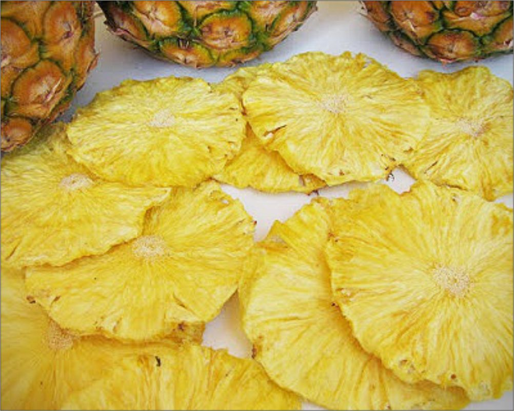
Keripik nanas
Keripik nanas, olahan satu ini mungkin hanya ada di Subang. Keripik ini hasil olahan buah nanas yang digoreng dengan menggunakan mesin penggoreng hampa. Karena jika menggunakan kuali atau wajan, buah nanas tidak akan menjadi keripik karena suhu panas yang berlebih. Makanan ini belum begitu marak dipasaran karena masih sedikit yang memproduksinya.
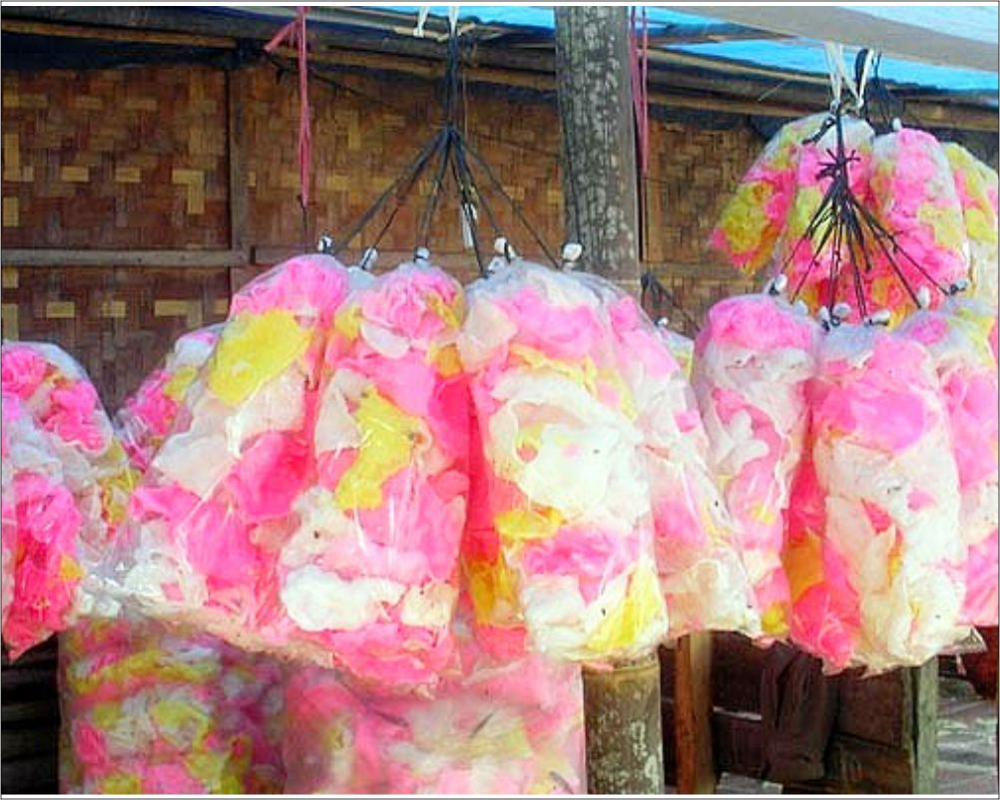
Kerupuk Miskin
Kerupuk Miskin adalah kerupuk khas Subang yang banyak dijual dipinggir jalan dengan cara pembuatannya digoreng menggunakan pasir yang sudah dicuci bersih. Rasa kerupuk ini sangat gurih dan tentunya bebas kolestrol karena tidak digoreng menggunakan minyak seperti kerupuk pada umumnya
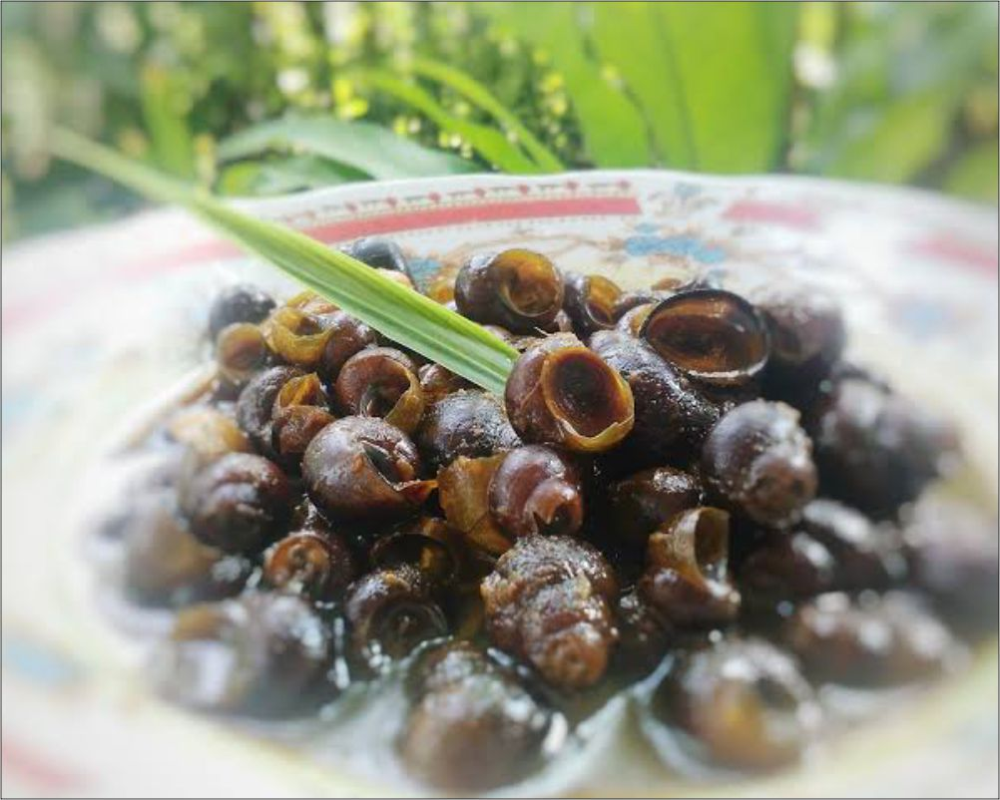
Tutut Soding
Tutut Soding adalah makanan khas Subang yang berbahan dasar keong sawah. Bahan untuk pembuatan Tutut Soding cukup sederhana yaitu tutut soding yang sudah dimasak kemudian dicampur dengan rempah-rempah seperti sereh, gula merah, asam jawa, kunyit, garam, laos, cabai, serta jahe. Tutut Soding sangat lezat, dan memiliki banyak kandungan protein yang tinggi sehingga sangat bagus jika dikonsumsi anak-anak yang sedang dalam masa pertumbuhan.
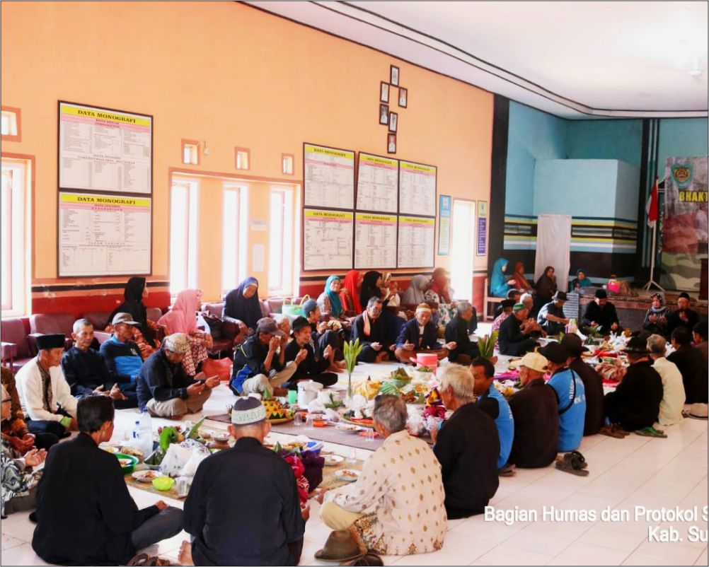
Ruwatan Bumi
Ruwatan bumi adalah salah satu upacara adat masyarakat agraris, arti dari ruwatan bumi sendiri yaitu mengumpulkan seluruh masyarakat desa sembari mengumpulkan hasil bumi, baik yang sudah diolah maupun yang mentah sebagai ungkapan rasa syukur terhadap Tuhan atas keberhasilan panen pertanian dan sebagai tolak bala. Disubang sendiri sampai saat ini masih melestarikan kebudayaan ini, lebih tepatnya di kampung Banceuy Wangunharja. Di kampung tersebut, Ruwatan bumi sudah dilaksanakan semenjak 1800 masehi.
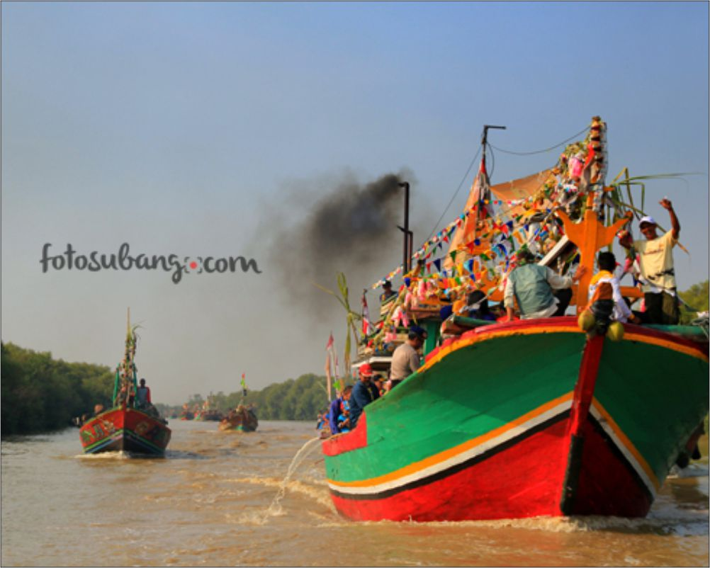
Nadran
Nadran atau labuh saji adalah upacara adat masyarakat nelayan di pesisir laut sebagai bentuk ungkapan syukur kepada Tuhan atas rezeki yang diberikan-Nya lewat hasil laut dan sebagai permohonan agar diberikan keselamatan dalam melaut serta tangkapan yang melimpah pada tahun mendatang. Di desa Blanakan, kabupaten Subang, setiap tahunnya melaksanakan upacara ini pada bulan Agustus dan upacara nadran di desa ini sudah dilaksanakan sejak tahun 1950.
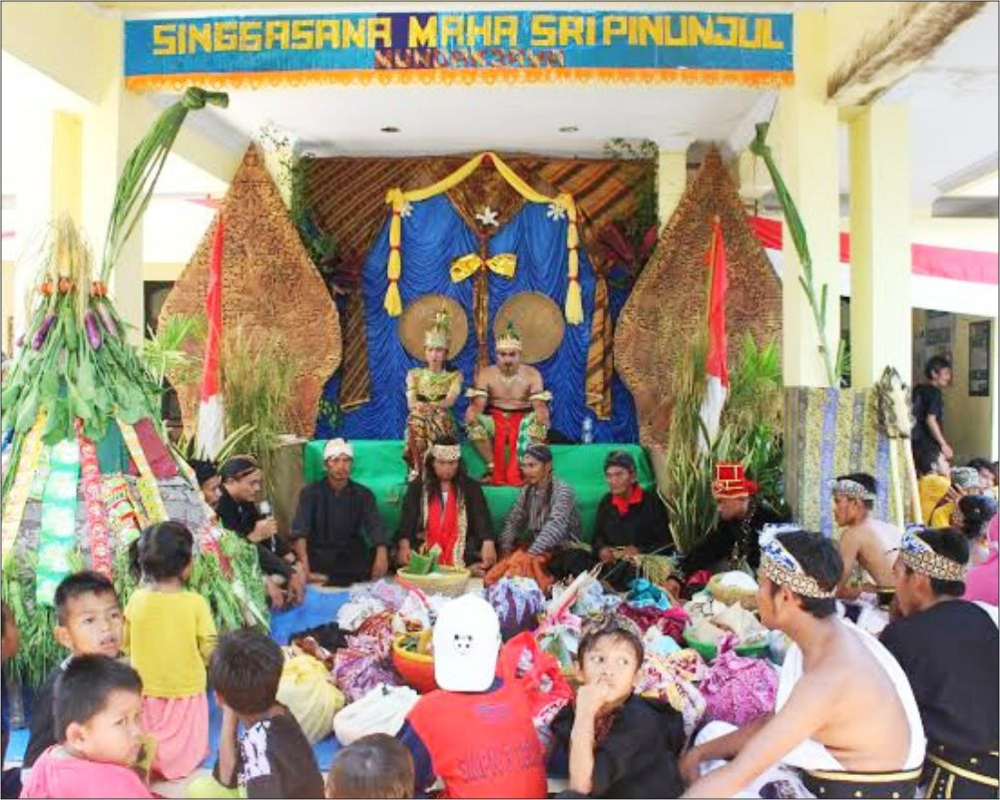
Mapag Dewi Sri
Sama seperti halnya Ruwatan Bumi, Mapag Dewi Sri juga sebagai salah satu upacara adat yang biasa dilakukan oleh masyarakat jawa dan sunda untuk menyambut datangnya panen raya sebagai ungkapan rasa syukur kepada Tuhan dan sebagai perwujudan rasa syukur para petani kepada Tuhan YME yang sudah menganugerahkan pangan yang bagus dan melimpah. Di Subang, Mapag Dewi Sri kerap dilaksanakan oleh masyarakat desa Cibeusi Jalan Cagak. Upacara ini pun merupakan ungkapan rasa hormat para petani kepada Dewi Sri, yang dikenal dengan Dewi padi lambang kesuburan dan kehidupan.